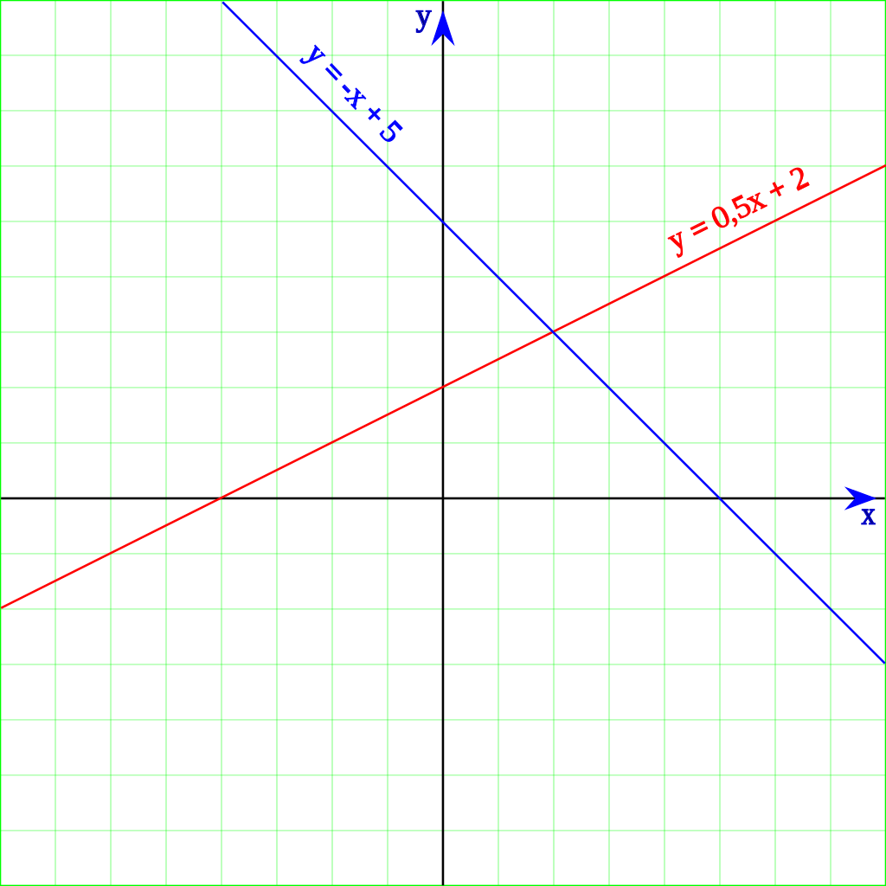
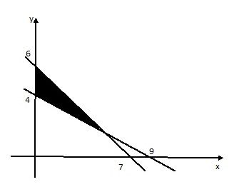
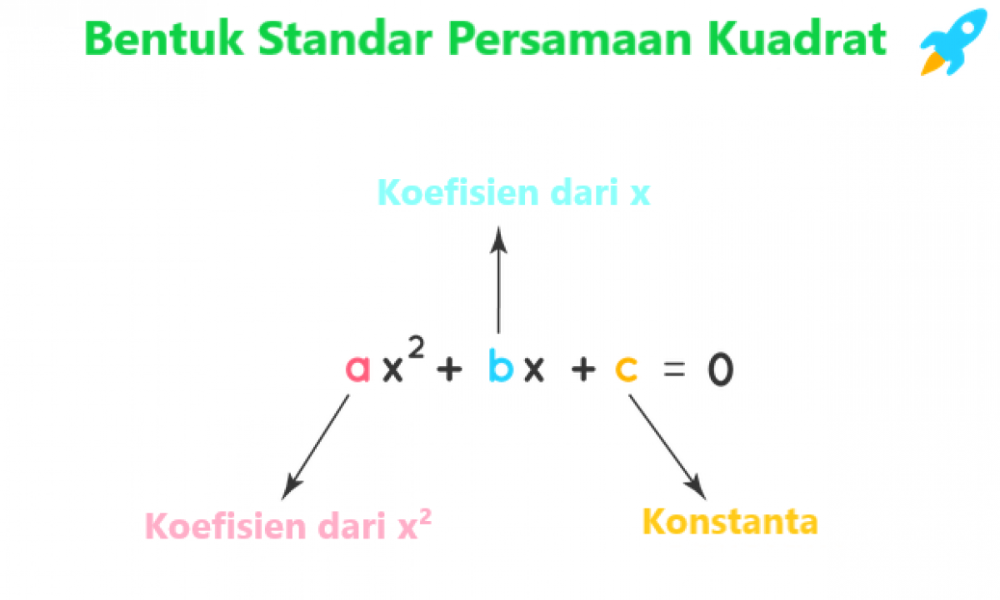

Persamaan Linier

Persamaan aljabar disebut sebagai persamaan linear jika setiap suku dalam persamaan tersebut mengandung konstanta dan dikalikan dengan variabel tunggal.
Read more
Pertidaksamaan Linier

Pertidaksamaan merupakan suatu bentuk/kalimat matematis yang memuat tanda lebih dari “ > “, kurang dari “ < “, lebih dari atau sama dengan “ ≥ “, dan kurang dari atau sama dengan “ ≤ “.
Read more
Persamaan kuadrat

Persamaan kuadrat secara sederhana dapat dipahami sebagai bentuk polinomial dengan pangkat tertinggi 2.
Bentuk umum persamaan kuadrat yaitu ax2 + bx + c = 0 dengan a ≠ 0.
Read more